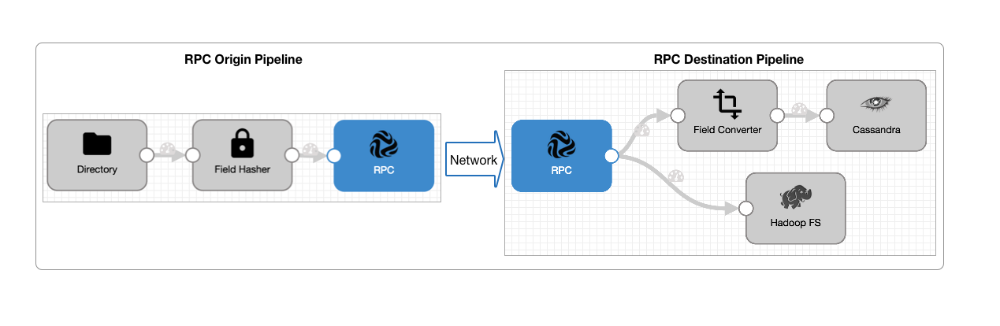

| RPC Pipelines | |
Remote Protocol Call pipelines, a.k.a. RPC pipelines, are a set of pipelines that pass data from one pipeline to another over the WAN without writing to an intermediary system. Use RPC pipelines to securely transmit data across data centers.
Typically, a pipeline uses a standard origin such as Directory and writes to a standard destination such as HBase. An RPC pipeline uses either an RPC destination or RPC origin to communicate with another RPC pipeline.
To use RPC pipelines, you create an origin pipeline and a destination pipeline. The origin pipeline uses an RPC destination to write directly to an RPC origin in the destination pipeline, as follows:
The RPC destination and RPC origin enable you to pass data securely from one data center to another, effectively like creating a single pipeline that spans two data centers.